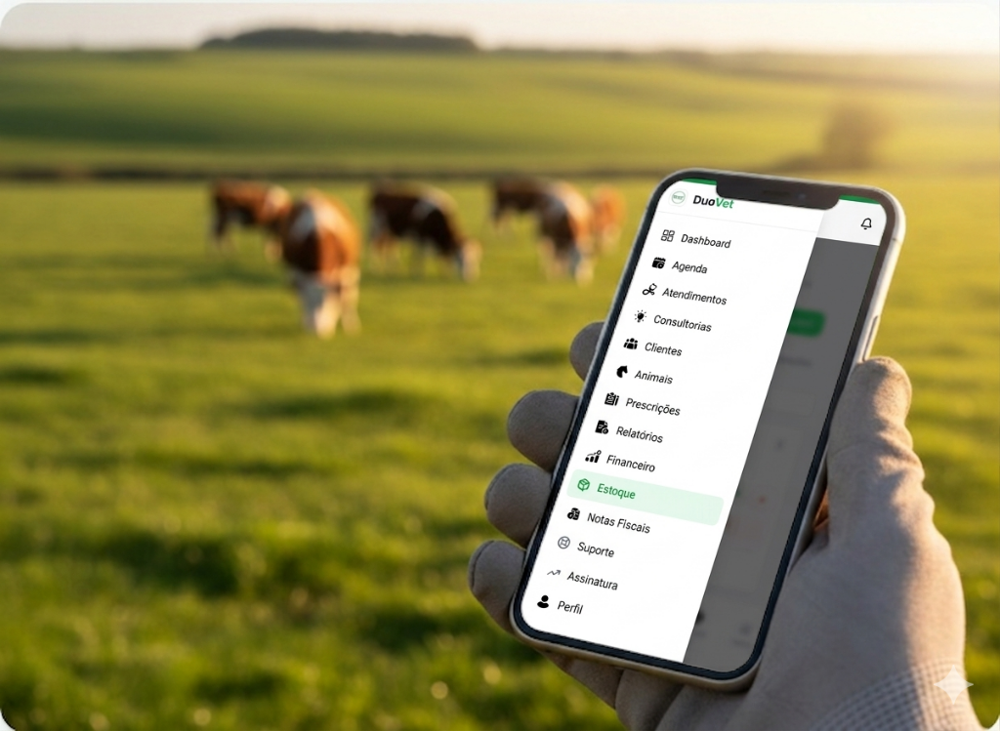

Chega de caderno, planilha e retrabalho.
O DuoVet é o sistema completo para veterinários de campo: prontuários, financeiro, notas fiscais e prescrições — tudo no celular, funciona mesmo sem internet.
A rotina do veterinário de campo não precisa ser assim. Compare como é antes e depois do DuoVet.

O DuoVet foi criado por quem entende a rotina do veterinário de campo. Nada de sistemas complicados ou cheios de botões desnecessários.
Registre o atendimento, gere a prescrição com cálculo automático, emita a nota fiscal integrada, lance no financeiro e siga para a próxima propriedade. Sem papel, sem bagunça, sem retrabalho.
Funciona offline, em qualquer fazenda
Mesmo sem sinal de internet no campo, o app continua funcionando. Os dados sincronizam automaticamente quando a conexão voltar.
Cada funcionalidade foi pensada para resolver um problema real da sua rotina no campo.
Sem sinal no campo? Sem problema. O DuoVet funciona 100% offline. Os dados sincronizam automaticamente quando a conexão voltar.
Emita NFS-e direto do atendimento com um clique. Sem abrir outro programa, sem retrabalho, sem dor de cabeça na hora de declarar.
Prescrições e relatórios personalizados com seus dados como veterinário, gerados em PDF e enviados direto pelo WhatsApp — sem e-mail, sem impressão.
Registre cada atendimento completo em minutos, direto do celular.
Clientes, propriedades, animais e lotes organizados em um clique.
Sincronize com Google Agenda e nunca esqueça um retorno.
Cada atendimento gera a cobrança. Saiba exatamente o que recebeu.
Gerencie produtos, medicamentos e materiais. Saiba o que está acabando antes de ir ao campo.
Registre e acompanhe suas consultorias com produtores de forma simples e organizada.
Dosagens calculadas pelo peso. Gere PDF personalizado com seus dados em segundos.
Acompanhe atendimentos, receita e desempenho com relatórios visuais.
Celular ou computador, no curral ou em casa. Acesse de qualquer lugar.
Interface limpa, sem complicação. Feito para quem não tem tempo a perder.
Adicione as informações do produtor e da fazenda em segundos.
Cadastre individualmente ou em lote, com raça, peso e histórico.
Preencha o prontuário digital com diagnóstico, procedimentos e observações.
A prescrição sai pronta com cálculo de dosagem e a cobrança é lançada automaticamente.
Veja quanto faturou, o que já recebeu e o que está pendente. Tudo em tempo real.
O DuoVet não foi criado por programadores que nunca pisaram numa fazenda. Foi desenvolvido a partir da experiência real de quem vive e entende a veterinária de campo.
Cada tela, cada botão, foi pensado para resolver um problema que existia de verdade na rotina de atendimentos.
Não é um sistema genérico adaptado. Foi construído do zero para quem atende a campo com grandes animais.
Seus dados e os dos seus clientes ficam protegidos com criptografia e servidores seguros no Brasil.
Comece gratuitamente por 7 dias. Sem cartão de crédito.
🎉 Você economiza R$ 299,80 por ano escolhendo o plano anual
Tudo que você precisa para se organizar
cobrado como R$ 1.499,00/ano
Sem cartão de crédito · Cancele quando quiser
Abra um chamado direto pela plataforma e receba a resposta no seu e-mail. Sem telefonemas, sem fila de espera — tudo registrado e rastreável.
Abra um chamado de suporte diretamente pelo sistema, a qualquer hora, sem precisar sair do DuoVet.
Assim que seu chamado for atendido, você recebe uma notificação por e-mail. Simples, sem enrolação.
Nosso time conhece a rotina do veterinário de campo e está pronto para resolver seu problema.
Consulte todos os seus chamados abertos e resolvidos diretamente no painel da plataforma.
Junte-se aos veterinários que estão deixando o papel para trás e organizando tudo em um só lugar. Comece hoje, é grátis por 7 dias.